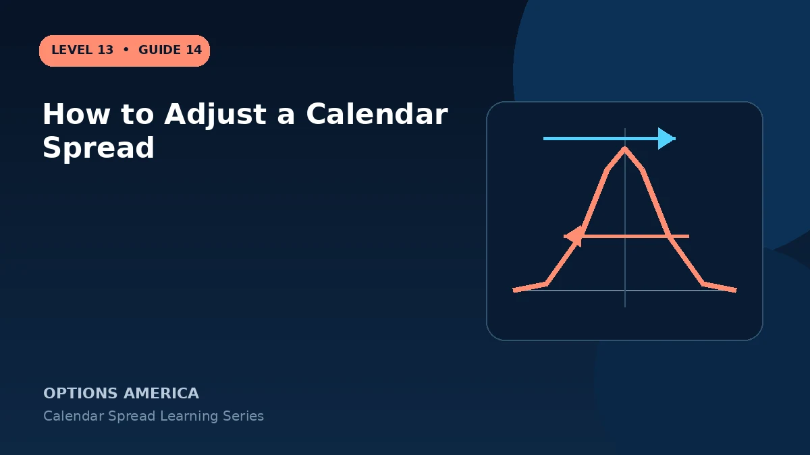

Evaluate rolling the short option, moving the strike, changing duration or converting a calendar into another structure.
Close or reduce
When the target or volatility thesis fails, closing both legs or reducing size is the cleanest response. A small defined debit does not make repeated adjustments automatically sensible.
Roll the short expiration
Buying back the front option and selling a later option can collect or spend value and extend the trade. Track total credits against the original debit and the remaining long option's life.
Move the strike
Rolling the short to a different strike creates a diagonal and new directional exposure. The original calendar payoff graph no longer describes the position.
Change the structure
Adding another calendar can create a double calendar; adding vertical legs can create a more complex hybrid. Recalculate assignment, buying power and every Greek before modifying protective relationships.
A practical example
A 100 calendar misses as stock rises to $105. Rolling the short 100 call to a later 105 call creates a diagonal with a new target and delta, not a repaired version of the same trade.
This simplified example uses selected price, time and volatility assumptions; live results will differ. Live option prices also reflect the underlying price, time decay, rates, dividends, liquidity and transaction costs. Greeks are theoretical estimates, not guarantees.
Frequently asked questions
Must a losing calendar be rolled?
No. Closing may be preferable.
Can a roll create a diagonal?
Yes, if the strike changes.
How should roll credit be measured?
Against all prior debits and credits, not in isolation.
Continue the Calendar Spreads cluster
Explore related guides: When to Close a Calendar Spread · Calendar Spread Profit, Loss and Breakeven · Calendar Spread vs Diagonal Spread. For a structured sequence, use the free Level 13 – Calendar Spreads course.
Options involve risk and are not suitable for every investor. This material is educational and is not investment, tax or legal advice. Greeks are theoretical estimates, and contract terms and broker requirements can vary.